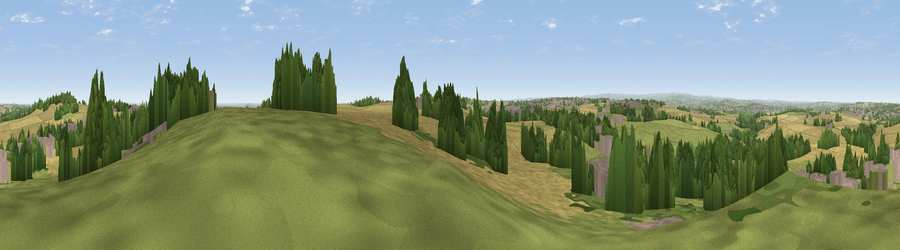

Viewpoint near Micklebring
#15922 in England · top 22% of its area beats it · near MicklebringWhere it is
The exact computed spot (SK 51275 94625). Click the marker for map links.
The view, rendered

A 360° render of this exact spot computed from the terrain model, tree cover and land cover — summer colours, afternoon light, calibrated against photographs of famous viewpoints. Real trees, hedges and buildings will differ in detail.
The panorama
Grey silhouette: terrain skyline in each direction (720 bearings, Earth curvature and refraction included). Dashed green: skyline with trees (+15 m) and buildings (+8 m) as obstacles. Blue strip: how far the ground is visible on each bearing.
Where the view opens
Wedge length = distance to the farthest visible ground on that bearing (vegetation-aware). Rings at 10, 25 and 50 km.
What fills the view
41% cropland · 32% grassland · 17% woodland · 10% built-up
Angular shares of the visible panorama (visual magnitude), not map area. Landscape diversity 0.55 (0–1 Shannon).
Key numbers
More beautiful places nearby
The staircase of upgrades: each row has a higher view potential than everything closer. Driving times are estimates from straight-line distance, calibrated against real road routing — check an actual route before setting out.
| Place | Direction | Drive | Score |
|---|---|---|---|
| Viewpoint near Clifton | NNE · 1 km | ~4 min | 58.9 |
| Viewpoint near Maltby | SE · 4 km | ~9 min | 70.8 |
| Viewpoint near Oughtibridge | W · 19 km | ~32 min | 72.5 |
| Viewpoint near Wharncliffe Side | W · 20 km | ~34 min | 75.2 |
| Viewpoint near Greenfield | W · 52 km | ~73 min | 76.0 |
| Viewpoint near Carrbrook | W · 52 km | ~74 min | 77.1 |
| Viewpoint near Otley | NNW · 58 km | ~81 min | 77.5 |
| Viewpoint near Mow Cop | WSW · 75 km | ~99 min | 78.9 |
53.44591, -1.22947 · source: screening · position refined by local search. Computed location — check access rights before visiting.